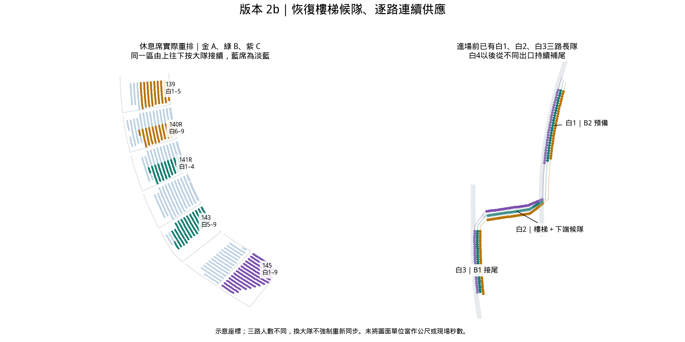

2026-10-19 · 恢復白2樓梯長候隊
版本 2b · 藍左白右 · 白衣連續三路
白衣休息席已重排。白1在B2、白2在樓梯與下端銜接區、白3在B1提前候隊；其後由多個休息區出口逐路供應。已撤回「等前隊過6口才離座、取消樓梯候隊」方案。
| 路 | 前段來源 | 後段來源 | 人數 |
|---|
| A：1→7→13…49 | 白1–5：139 | 白6–9：140右 | 272 |
| B：2→8→14…50 | 白1–4：141右 | 白5–9：143 | 269 |
| C：3→9→15…51 | 白1–9：145 | 268 |
每路來源只向後方切換一次；同一區由上往下按大隊順序帶出。補用145區原有空席8個，對應空出8個舊席，1609人及場內定位不變。兩版顏色分區是軟偏好，實體出口與接續順序優先。

連續供應的驗證
每一白路跨全部9大隊，相鄰人過6口間隔均為0.32示意單位，包含24個換隊接縫。白2共97人提前候隊，71人在樓梯、26人在下端銜接區；白3共88人在B1。白4以後依各出口到6口的剩餘路長提前離座，沒有整隊清空後才放行。
場內固定先導次序為白C→B→A，相對時差0／0.24／0.72；藍三路相對白C提前4.00。先導差只設定一次，後續各路保持連續節拍。數值為未校準示意單位，不能作現場秒數或速度結論。
白衣各隊4階段組內橫切0；36個白衣隊對在B1／樓梯至6口橫切0。場內保留每對3個靜態轉入交點，逐點驗證前隊尾先通過。全1609人中涉及白衣的移動對移動／站定，連續線段最短距離低於0.03圖面單位的人對為0；包含尚未離座、樓梯/B1候隊、永久場內定位者。
點模型不等於人體通行容量認證。藍1原有路線問題仍須另行處理；本次不宣稱全場靜態零交叉。真實通道寬度與速度尚需現場校準。